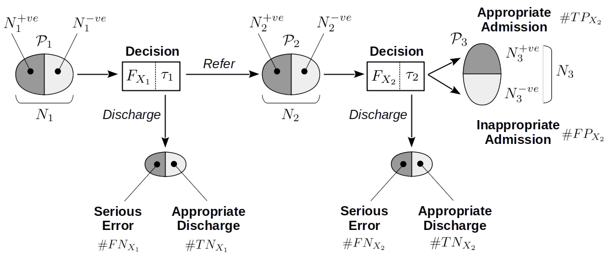

In clinical decision making for serious but rare events, there has been discussion about how to use predictive models as tools in decision making.
One example is in decision making for assessment and treatment in people at risk of suicide. A systematic review Kessler et al. (2019) of “suicide prediction models” cites the very real concern that the low positive predictive value (PPV) of current state-of-the-art models renders them at least clinically useless and at worst obviously dangerous. Most published models, however, attempt to predict the absolute risk of suicide based on some feature data (i.e. covariates, independent variables or predictors) for individuals – that is, these models attempt to identify people at risk of suicide. A central tennet of Kessler et al’s argument is that net benefit – rather than positive predictive value – is the appropriate decision-theoretic framework and in effect, predictive models might be better used as tools for screening out cases (of course, their argument and analysis is far more detailed but this is what I’m focusing on here). Kessler et al describe how to improve the clinical utility of suicide prediction models by embedding them in a clinical triaging system and using thresholds for intervening (or not) derived from decision curve analysis Vickers, Van Calster, and Steyerberg (2016).
Kessler et al’s proposal is that if there is a high prevalence of negative cases in routine clinical practice, then such a staged triaging system would enable scarce (and often, intrusive) clinical resources to be directed towards cases which are uncertain. In this post, we consider positive and negative predictive value, net benefit as well as examining a sequential triage model of clinical decision support.
Predictive Values
With an assumed representative sample of a population, let \(Y\) be the output of the decision rule/system, and \(E\) be whether or not the event occurred:
- \(Y = 1\) represents the decision that a case is positive, and \(Y = 0\) represents a negative decision
- \(E = 1\) represents the serious event occuring, \(E = 0\) that it did not
Consider the following hypothetical confusion matrix for a decision system on a representative validation sample of 1000 people:
|
|
Event (E)
|
|
|
0
|
1
|
|
Decision (Y)
|
|
0
|
900
|
10
|
|
1
|
80
|
10
|
There are 20 serious events in 1000 cases. The model gives a correct decision for 900/980 negative events (true negatives, TN) and decides that 80 negative cases are in fact positve (false positives; FP). The model performs poorly on decisions with positive cases; it decides 10/20 positive events are positive (true positives, TP) and makes the potentially catastrophic decision that 10/20 positives are in fact negatives (false negatives, FN).
So, we find that :
- Sensitivity = \(\Pr(Y = 1 \mid E = 1)\) = \(TP/(TP+FN)\) = 0.5; the probability that the decision was positive, given the event was positive
- Specificity = \(\Pr(Y = 0 \mid E = 0)\) = \(TN/(TN+FP)\) = 0.918; the probability that the decision was negative, given the event was negative
- The prevalence of the serious event is 0.02
As noted in the Altman and Bland classic (Altman and Bland 1994), “the whole point of a diagnostic test is to use it to make a diagnosis, so we need to know the probability that the test will give the correct diagnosis” and sensitivity and specificity of the test (here, the decision rule) aren’t sufficient.
The important point is, in a clinical situation, we are interested in the conditional probabilities \(\Pr(E \mid Y)\) (the probability of the event given the decision rule output).
However, we only have the conditionals \(\Pr(Y \mid E )\) and conditional probabilities do not commute so \(\Pr( Y \mid E) \neq \Pr( E \mid Y)\). Failure to recognise this difference is the prosecutor’s fallacy or the fallacy of the transposed conditional (Blitzstein and Hwang 2019) Chapter 2.8.
We will need to enumerate the probabilities of other conditions (i.e. states of \(E\) and \(Y\)), so:
- \(\Pr(Y = 1 \mid E = 0)\) is the false positive rate, or 1-specificity = \(1-\Pr(Y=0 \mid E=0)\) = \(FP/(FP+TN)\) = 0.082
- \(\Pr(Y = 0 \mid E = 1)\) is the false negative rate, or 1-sensitivity = \(1-\Pr(Y=1 \mid E=1)\) = \(FN/(FN+TP)\) = 0.5
Deriving PPV and NPV
The definition of conditional probability means that, for the conditions we want, we can state:
\[
\Pr(E \mid Y) = \frac{\Pr(E,Y)}{\Pr(Y)}
\]
Or, by rearranging:
\[
\Pr(E,Y) = \Pr(E \mid Y) \Pr(Y)
\]
Applying the same argument for the conditionals we have \(\Pr(Y \mid E)\) (sensitivity and specificity):
\[
\Pr(Y,E) = \Pr(Y \mid E) \Pr(E)
\]
The joint probability of two events are commutative (unlike conditionals) therefore \(\Pr(E,Y) = \Pr(Y,E)\) and we can equate:
\[
\Pr(E \mid Y) \Pr(Y) = \Pr(Y \mid E) \Pr(E)
\]
Noting again that we are interested in \(\Pr(E \mid Y)\) we can solve:
\[
\Pr(E \mid Y) = \frac{\Pr(Y \mid E) \Pr(E)}{\Pr(Y)}
\]
This is Bayes formula.
Example Calculation
Using our example above, here’s want we want, and what we have available:
\[
\Pr(E=1 \mid Y=1) = \frac{ \overbrace{\Pr( Y=1 \mid E=1)}^\text{sensitivity} \overbrace{\Pr(E=1)}^\text{prevalence} }
{ \underbrace{\Pr(Y=1)}_\text{prob. of +ve decision} }
\]
We can calculate the denominator \(\Pr(Y=1)\), the unconditional probability of a positive decision, using the law of total probability:
\[
\begin{aligned}
\Pr(Y=1) =& \overbrace{\Pr( Y=1 \mid E=1)}^\text{sensitivity} \overbrace{\Pr(E=1)}^\text{prevalence} + \\
&\underbrace{\Pr( Y=1 \mid E=0)}_\text{1-specificity} \underbrace{\Pr(E=0)}_\text{1-prevalence}
\end{aligned}
\]
The calculation step-by-step is:
- Compute the denominator \(\Pr(Y=1) = 0.5 \times 0.02 + (1-0.918) \times (1-0.02) = 0.09\)
- Substitute sensitivity and prevalence in the numerator:
\[
\Pr(E=1 \mid Y=1) = \frac{ \overbrace{0.5}^\text{sensitivity} \times \overbrace{0.02}^\text{prevalence} }
{ \underbrace{0.09}_\text{prob. of +ve decision} } = 0.11
\]
Which delivers the positive predictive value.
We can similarly derive the negative predictive value:
\[
\Pr(E=0 \mid Y=0) = \frac{ \overbrace{\Pr( Y=0 \mid E=0)}^\text{specificity} \overbrace{\Pr(E=0)}^\text{1-prevalence} }
{ \underbrace{\Pr(Y=0)}_\text{prob. of -ve decision} }
\]
And our denominator in this case:
\[
\begin{aligned}
\Pr(Y=0) =& \overbrace{\Pr( Y=0 \mid E=1)}^\text{1-sensitivity} \overbrace{\Pr(E=1)}^\text{prevalence} + \\
& \underbrace{\Pr( Y=0 \mid E=0)}_\text{specificity} \underbrace{\Pr(E=0)}_\text{1-prevalence}
\end{aligned}
\]
Plugging in the numbers:
- Compute the denominator \(\Pr(Y=0) = (1-0.5) \times 0.02 + 0.918 \times (1-0.02) = 0.91\)
- Substitute specificity and prevalence in the numerator:
\[
\Pr(E=0 \mid Y=0) = \frac{ \overbrace{0.918}^\text{specificity} \times \overbrace{0.98}^\text{1-prevalence} }
{ \underbrace{0.91}_\text{prob. of -ve decision} } = 0.987
\]
This hypothetical decision system is useful for correctly deciding on negative cases, but performs poorly on identifying positive cases.
Simulation
Now suppose that we have two (or more) clinical tests to help identify patients at risk for a relatively rare but serious event; for example, \(X_1\) is a relatively cheap and easy-to-administer instrument or questionnaire. \(X_2\) is a semi-structured interview or clinical examination which is time consuming, requires expertise to administer and is therefore significantly more costly than \(X_1\).
Further, we have a development sample of 5000 people for which we have the results for \(X_1\), \(X_2\) and we know who in this sample experienced the serious event.
We next build a model that attempts to predict the rare, serious event (\(Y = 1\)) on the basis of a patient’s \(X_1\) results and denote this \(y = F_{X_1}(x)\). Note, no claim is made that this model is well designed.
Assume the somewhat luxurious position that we have a further 5000 validation cases from the same population – so we can examine the model’s performance on data it was not ‘trained’ on.
Let’s look at the calibration of the model on the validation sample:

It’s important to note that:
- the model \(F_{X_1}\) delivers a prediction in the form of a continuous estimate of the absolute probability of the serious event given the screening instrument \(X_1\).
- there is no decision rule here; so we can’t discuss PPV or NPV
- the model is poorly calibrated: which is unsurprising given the serious event is rare – in the 5000 validation samples there were 240 serious events (\(E = 1\)) representing a small prevalence of 0.048
- the model appears to under estimate the probability of a serious event; for example, if the model predicts a probability of a serious event of 0.25, the actual probability is closer to 0.5.
We can repeat the same analysis for the other, more costly instrument \(X_2\); as for the cheaper instrument, we train a model \(F_{X_2}\) and then we have access to a validation sample on which we can examine the calibration:
 Again, not great calibration.
Again, not great calibration.
Decision Rules
Returning to the idea that Kessler et al discussed, how can we design a decision rule that makes use of these two tests ?
ROC Curves
A common approach to designing a decision rule is to vary a threshold over the output of \(F_{X_1}\) and plot the ROC curve; then, find an “optimal” threshold that maximises the sensitivity/specificity tradeoff.
## Setting levels: control = 0, case = 1
## Setting direction: controls < cases

The confusion matrix for the decision rule with the threshold = 0.074 shown in the ROC curve above is:
|
|
Event (E)
|
|
|
0
|
1
|
|
Decision (Y)
|
|
0
|
3953
|
44
|
|
1
|
807
|
196
|
The usual measures:
- Sensitivity = 0.8167
- Specificity = 0.8305
We can compute the more clinically relevant probabilties as follows (as for Section 1.2):
- Positive predictive value: \(\Pr( E = 1 \mid Y = 1 )\) = 0.195
- Negative predictive value: \(\Pr( E = 0 \mid Y = 0 )\) = 0.989
Critically, however, false negatives (44) are catastrophic here because the event, although rare, is serious (i.e. the death of a patient); but \(X_1\) is correctly identifying a high number (3953) of negative cases correctly.
As discussed here and more persuasively here sensitivity and specificity do not take account of the loss or utility of the decision and neither do PPV and NPV.
To understand why this neglect of utility (or loss) is important, take the above confusion matrix and then assume the decision rule declares one additional false negative, so that:
- the number of false negatives (FN) = 45
- the actual number of positive events is of course, unchanged at 240
- so conversely, the true positive rate drops by one so TP = 195
- the revised sensitivity is then 0.8125 – a decrease in decision rule performance of 0.0042
Reverse the experiment, so that the decision rule improves marginally and declares one additional true positive:
- the number of true positives increases by one, TP = 197
- the number of false negatives decreases by one, FN = 43
- the revised sensitivity is then 0.8208 – an increase in decision rule performance of 0.0041
The change in performance (the “score”) for one additional correct or incorrectly classified positive case is symmetric and of the order \(1/N\), where \(N\) is the sample size.
Clearly, an additional false negative should penalise the overall performance score differently than the reward for an additional true positive.
Optimising the threshold (decision rule) by maximising the sensitivity-specificity tradeoff (e.g. using the Yourdon J statistic) is not the only method of choosing the threshold and we might for example, choose a decision rule that favours performance of different cells of the confusion matrix. A decision theoretic framework like net benefit allows one systematic treatment.
Decision Curve Analysis
Here, we are trying to implement a decision rule whereby a patient is triaged to a more costly “test” (\(X_2\)) on the basis of a more available or less costly test \(X_1\).
We can adopt a decision-theoretic approach (see previous posts here) and design a loss (conversely, a utility) function for a decision rule (threshold).
Assume that we continue to insist on a “hard” decision rule that decides, on the basis of \(F_{X_1}\), whether to further investigate (triage to \(X_2\)) or, decide that the serious event is unlikely so no further follow-up is necessary and the patient can be discharged.
In this situation, we can construct the confusion matrix below:
|
|
Event (E)
|
|
|
0
|
1
|
|
Decision (Y)
|
|
0
|
TN
|
FN
|
|
1
|
FP
|
TP
|
And then assign a loss to each cell e.g. the loss for a true negative is \(L_{TN}\), for a false negative \(L_{FN}\) and so on.
For a given decision rule (here, the decision rule can be equated with the threshold value \(\tau\) over \(F_{X_1}\)) we can compute the expected loss:
\[
L( \tau ) = \frac{1}{N} \left( \#TN \cdot L_{TN} + \#FN \cdot L_{FN} + \#FP \cdot L_{FP} + \#TP \cdot L_{TP} \right)
\]
where \(\#TN\) is the number of true negatives under the decision rule \(\tau\) etc. and \(N\) is the sample size. We then systematically vary \(\tau\) and choose our final decision rule on the basis of minimum loss.
The difficulty is that it is often hard to quantify losses (or value, utility) either absolutely or relatively for each cell of the confusion matrix – the example of Kessler et al examines predictive models for suicide, where a false negative would be catastrophic; is the loss incurred for a false negative 10, 100 or 1000 times ‘worse’ than a true negative ?
An alternative, proposed by Vickers, Van Calster, and Steyerberg (2016), is to first set up a decision tree representing decisions to intervene / not intervene for the combinations shown in the standard confusion matrix. We then assume that the loss of not intervening when we should (a false negative) is fixed at unity and the loss of a false positive is defined relative to this for a given threshold \(\tau\). After some algebra, the loss attributable to a false positive is:
\[
\frac{\tau}{1-\tau}
\]
Then, the net benefit of a decision rule (value of \(\tau\)) is then:
\[
NB(\tau) = \frac{\#TP}{N} - \frac{\#FP}{N} \left( \frac{\tau}{1-\tau} \right)
\]
In this equation, true positives are weighted one, and false positives weighted \(\tau /( 1-\tau)\). As the cost of a false positive is a function of the threshold we can deduce the relative costs. For example, if \(\tau = 1/3\), the cost of a false positive is half the cost of a true positive.
A decision curve is then the plot of \(NB(\tau)\) against \(\tau\) as follows:

The solid black line is the net benefit of the model \(F_{X_1}\) at each threshold level. The grey horizontal line (at \(NB(\tau) = 0\)) is the net benefit of assuming all patients are negative. The black dotted line is the net benefit of the decision rule: “assume all patients are positive and intervene” which is of course wasteful, but offers comparison to the net benefit of each decision rule \(\tau\). The red solid vertical line shows the threshold located by maximising the sensitivity/specificity tradeoff in Section 3.1. Finally, the red dashed line identifies the threshold at which net benefit departs (exceeds) the “assume all positive” line.
The region for which \(NB(\tau)\) is greater than zero are the thresholds for which the model outperforms “assume all patients are negative.” An advantage of decision curve analysis is that one can vary \(\tau\) and see the relationship between the model performance and a default strategy of assuming everyone requires intervention – the point at which the black solid line departs from the black dotted line.
Of note, decision curve analysis is not intended to be a method of locating a threshold; in fact, Vickers and Elkin (2006) discuss the method in the context of shared decision making where the clinician and patient’s prefence for the relative cost of a false positive are factored into deciding the utility of a decision to intervene.
However, as an experiment, let’s choose a threshold at the point where the net benefit departs from the default “assume all patients are positive and intervene” – shown as the red dotted line in the right panel at 0.01. This results in zero false negatives (serious errors), 240 true positives, 506 true negatives and 4252 false positives.
To put this in the context of a sequential triage model, 4252 patients who are actually negative would be triaged for the \(X_2\) assessment.
Sequential Triage

The proposal Kessler et al put forward is a sequential triage model; above, we have sketched (schematically) the two-stage approach described here.
Here, \(\mathcal{P}_1\) is the total sample (of size \(N_1\), containing \(N^{+ve}_{1}\) and \(N^{-ve}_{1}\) positive and negative cases respectively) who have been assessed using \(X_1\) and a decision made on the basis of the prediction \(F_{X_1}\) and decision rule \(\tau_1\). Cases are then discharged on the basis of the decision; of those discharged, serious errors and appropriate discharges are analogous to the number of false negative \(\#FN_{X_1}\) and true negative \(\#TN_{X_1}\) decisions respectively.
Those identified as likely positive by the decision \(\tau_1\) form the triaged subset \(\mathcal{P}_2\) of size \(N_2\), who proceed to the more resource intensive assessment \(X_2\). A similar decision system \(F_{X_2}\) with rule \(\tau_2\) then either discharges or (in this example) recommends admission to hospital.
Note that:
- \(N_2 = N^{+ve}_2 + N^{-ve}_2\) – the size of triaged set \(\mathcal{P}_2\) depends on the number of actually positive and negative cases triaged.
- In the sequential arrangement, \(\mathcal{P}_2\) depends on the performance of \(X_1\). For example, if a case is incorrectly discharged at \(X_1\), then \(X_2\) does not have an opportunity to ‘correct’ that error, so: \(N^{+ve}_{2} = N^{+ve}_{1} - \#FN_{X_1}\).
With this in mind, we now attempt to define measures of performance in terms safety and efficiency
Safety
From the discussion in Section 1.2, decision systems with favourable NPV (but poor PPV) might be helpful in screening out candidates at \(X_1\) and triaging suspected positive cases to \(X_2\).
We define a safe decision system as having these properties:
- at each stage (i.e. at \(X_1\) and \(X_2\)), anyone with a high or uncertain probability of being positive is appropriately triaged
- serious errors are minimised by not discharging people inappropriately, which means it should minimise false negatives
We’ll define the total safety of the system as a function of the number of serious errors made by both \(F_{X_1}\) and \(F_{X_2}\):
\[
\begin{aligned}
S_{Total}(\tau_1, \tau_2) &= 1 - \frac{\#FN_{X_1}+\#FN_{X_2}}{N^{+ve}_{1}+N^{+ve}_{2}} \\
&= 1 - \frac{\#FN_{X_1}+\#FN_{X_2}}{N^{+ve}_{1}+(N^{+ve}_{1} - \#FN_{X_1})} \\
&= 1 - \frac{\#FN_{X_1}+\#FN_{X_2}}{2N^{+ve}_{1} - \#FN_{X_1}}
\end{aligned}
\]
As a concrete example (with respect to the diagram above and using the same validation set used in the decision curve and ROC analysis above):
- \(\mathcal{P}_1\) is of size \(N_1\) = 5000 with \(N^{+ve}_1\) = 240 actual positive and \(N^{-ve}_1\) = 4760 actual negative cases
After administering \(X_1\), using the threshold \(\tau_1 = 0.10\) for \(F_{X_1}\) results in:
- 80 serious errors or inappropriate discharges equal to false negatives, \(\#FN_{X_1}\)
- 4321 appropriate discharges – equal to the true negatives, \(\#TN_{X_1}\)
- Resulting in \(N_2\) = 599 cases triaged into \(\mathcal{P_2}\) equating to the sum of false and true positive cases (i.e. those declared positive by \(F_{X_1}\) with \(\tau\) = 0.10)
- Of these 599 cases, \(N^{+ve}_2\) = 160 and \(N^{-ve}_2\) = 439
Now, let’s assume \(\tau_2 = 0.36\), for \(F_{X_2}\) applied to \(\mathcal{P}_2\). We arrive at:
- 57 serious errors, equating to \(\#FN_{X_2}\)
- 430 appropriate discharges, the true negatives \(\#TN_{X_2}\)
- Resulting in \(N_3\) = 112 cases which will be admitted, consisting of \(N^{+ve}_3\) = 103 actually positive cases (appropriate admissions) and \(N^{-ve}_3\) = 9 actually negative cases (inappropriate admissions)
Substituting these numbers in the equation above for safety:
\[
\begin{aligned}
S_{Total}(\tau_1, \tau_2) &= 1 - \frac{\#FN_{X_1}+\#FN_{X_2}}{2N^{+ve}_{1} - \#FN_{X_1}} \\
&= 1 - \frac{80 + 57}{480 - 80} \\
&= 0.6575
\end{aligned}
\]
If the decisions made by \(F_{X_1}\) and \(F_{X_2}\) resulted in no serious errors, we would have zero false negatives and \(S_{Total}\) would attain a maximum of one.
Efficiency
Now consider efficiency defined as the ratio of useful product to resource consumed.
Here, the denominator – resource consumption – is as follows:
- all patients \(N_1\) will have \(X_1\) administered and be passed through the prediction model \(F_{X_1}\), so resource consumed is \(N_1\)
- a subset of patients declared positive by the decision rule \(\tau_1\) are triaged to \(\mathcal{P}_2\) which is composed of \(N^{+ve}_2\) and \(N^{-ve}_2\) actual positive and negative cases respectively
- all patients in \(\mathcal{P}_2\) are administed \(X_2\) – so resource consumed is \(N_2\)
The numerator – useful product – needs elaboration. First consider the efficiency of \(\tau_1\), which will be perfectly efficient if all actual negative cases are discharged (and do not end up in \(\mathcal{P_2}\)) and all positive cases are triaged.
\[
E_{X_1}( \tau_1 ) = \frac{\#TP_{X_1} + \#TN_{X_1}}{N_1}
\]
Which attains a maximum efficiency of one when \(\#TN_{X_1} = N^{-ve}_{1}\) and \(\#TP_{X_1} = N^{+ve}_{1}\) (recall that \(N_1 = N^{+ve}_1 + N^{-ve}_2\))
A similar definition holds for \(X_2\) :
\[
E_{X_2}( \tau_2 ) = \frac{\#TP_{X_2} + \#TN_{X_2}}{N_2}
\]
And we allow \(X_1\) and \(X_2\) to contribute equally to a total efficiency in the range \([0,1]\) defined as:
\[
E_{Total}( \tau_1, \tau_2 ) = \frac{1}{2} \left[ E_{X_1}( \tau_1 ) + E_{X_2}( \tau_2 ) \right]
\]
References
Altman, Douglas G, and J Martin Bland. 1994. “Statistics Notes: Diagnostic Tests 2: Predictive Values.” Bmj 309 (6947): 102.
Blitzstein, Joseph K, and Jessica Hwang. 2019. Introduction to Probability. CRC Press.
Kessler, Ronald C, Robert M Bossarte, Alex Luedtke, Alan M Zaslavsky, and Jose R Zubizarreta. 2019. “Suicide Prediction Models: A Critical Review of Recent Research with Recommendations for the Way Forward.” Molecular Psychiatry, 1–12.
Vickers, Andrew J, and Elena B Elkin. 2006. “Decision Curve Analysis: A Novel Method for Evaluating Prediction Models.” Medical Decision Making 26 (6): 565–74.
Vickers, Andrew J, Ben Van Calster, and Ewout W Steyerberg. 2016.
“Net Benefit Approaches to the Evaluation of Prediction Models, Molecular Markers, and Diagnostic Tests.” BMJ 352.
https://doi.org/10.1136/bmj.i6.